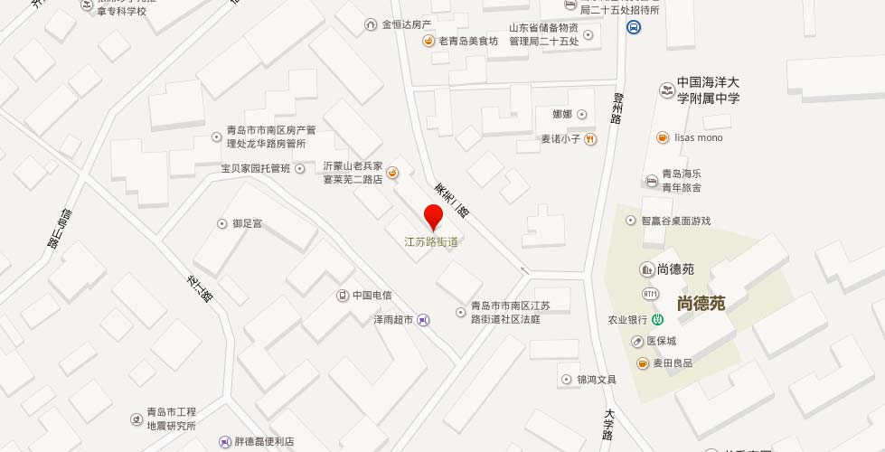

【地址】青岛市市南区莱芜路2号甲
【概况】市南区辖街道。位于区境中部。东邻八大关街道，西接中山路街道，南濒大海，北与市北区交界。面积1.284平方千米。2005年末，常住居民13536户35683人，暂住人口2700人。辖6个社区（包括原金口路街道的大学路社区）。地势较高，多山头、信号山。主要道路有苏州路、江苏路、观象一路、观象二路、伏龙路、莱芜一路、吴县一路、吴县二路、莱芜二路、伏龙路、伏龙山路、齐东路、大学路、龙江路、信号山路、登州路、掖县路、黄县路等。景点有信号山、观象山。
【沿革】江苏路街道办事处成立于1954年12月，办公地址在江苏路27号。1958年11月与龙江路街道合并，办公地址迁至齐东路19号至今。1996年，面积0.7平方千米，人口3.1万人，辖观象一路、江苏路、龙山路、苏州路、吴县路、伏龙山路、齐东路、莱芜一路南段、莱芜一路北段、莱芜二路南段、莱芜二路北段、信号山路、龙江路、掖县路14个居委会和港务局家委会。2004年5月25日，改为江苏路社区公共服务委员会。
【邮编】266003【2011年代码及城乡分类】370202007（5个社区）：～001 111齐东路社区 ～002 111伏龙路社区 ～004 111龙江路社区 ～005 111掖县路社区 ～007 111江苏路社区
【江苏路社区】2001年3月，原苏州路居委会与江苏路居委会部分路段（江苏路双号16号－44号、单号29－91号）合并为江苏路社区。2004年，原属于龙山路居委会的观象一路路段划入；同年年底将港务局宿舍家委会划入。北毗东西快速路，南邻龙山地下商业街。面积0.21平方千米。2005年末，人口2401户5862人，居民小组57个。居委会驻江苏路北段（江苏路40号甲）。
【伏龙路社区】2001年，吴县一路、吴县二路、莱芜一路南段3个居委会合并为莱芜一路社区。2004年，莱芜一路社区、莱芜二路社区部分路段合并为伏龙路社区，因办公地点设在伏龙路11号而得名。位于信号山南侧。面积0.21平方千米。2005年末，人口2280户7200余人，居民小组68个。
【掖县路社区】居委会成立于1980年。1998年莱芜二路南居委会划入。2004年莱芜二路北居委会划入。位于江苏路社区委东端，东邻青岛山，南临龙江路社区，背靠信号山、伏龙山。2005年末，共人口2446户5009人，居民小组38个。
【龙江路社区】居委会成立于1984年6月，从原掖县路居委会划分出来，管辖龙江路路段（24号－37号）和华山路段（1号－19号）。1998年，将龙江路27号以南的楼院划给原金口路街道辖区。2001年原信号山路居委会并入。2004年，划入大学路社区的3个路段（恒山路全路段，黄县路、龙江路的部分路段）；将信号山路段以东的（1号－11号戊，2号－6号）划给掖县路社区。位于江苏路社区委东部，东邻中国海洋大学，西邻迎宾馆。辖区北至信号山路（13号－37号，6号甲－24号），南至恒山路（1号－5号），东至大学路（26号－52号），西至迎宾馆。面积0.2平方千米。2005年末，人口2186户6480人，居民小组48个。
【齐东路社区】辖区包含齐东路、伏龙山、龙山路和江苏路4条路段。面积0.18平方千米。2005年末，人口2040户5440余人，居民小组41个。
【大学路社区】居委会成立于20世纪50年代。1999年，划入原黄县路居委会的黄县路、龙江路的部分路段、恒山路的全路段。2001年4月，大学路、龙华路2个居委会合并为大学路社区。2004年8月，把恒山路全路段、黄县路、龙江路的部分路段划给龙江路社区后，余者和龙口路社区合并为大学路社区。辖区面临大海，背靠信号山。2005年末，人口2483户7159人，居民小组56个。居委会驻龙口路13号。